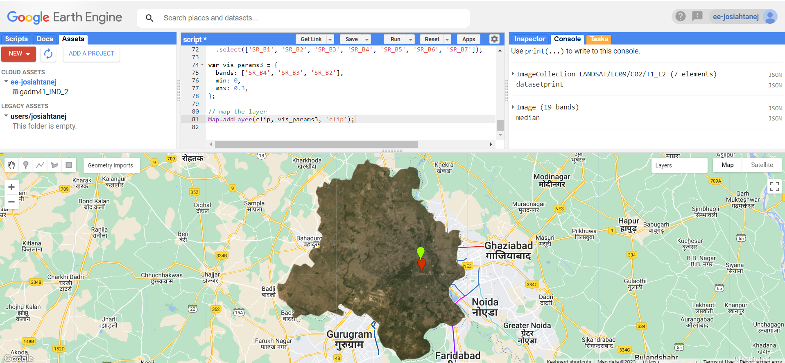
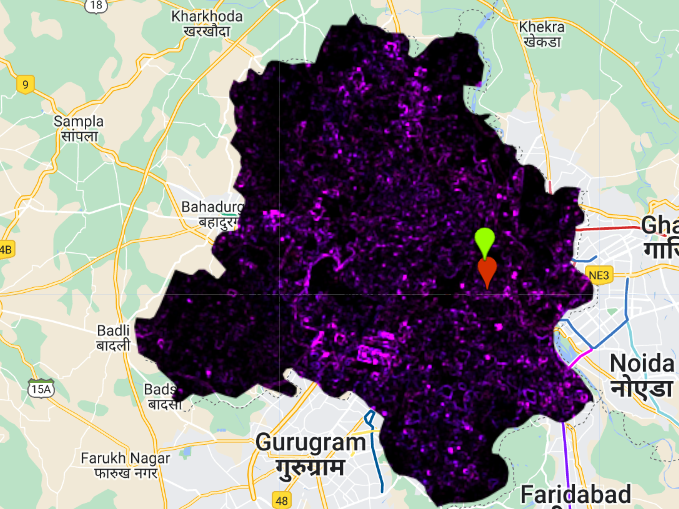
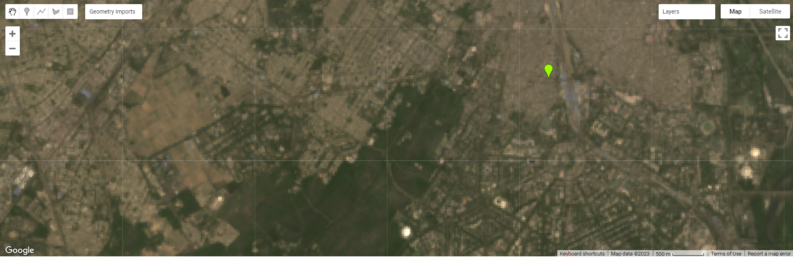
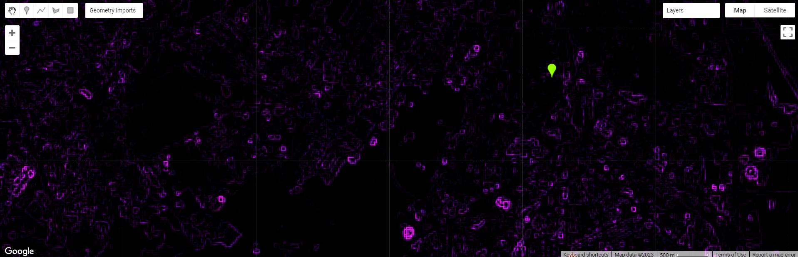
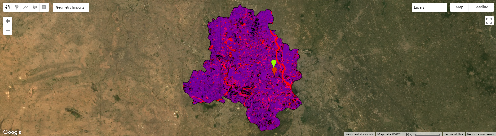
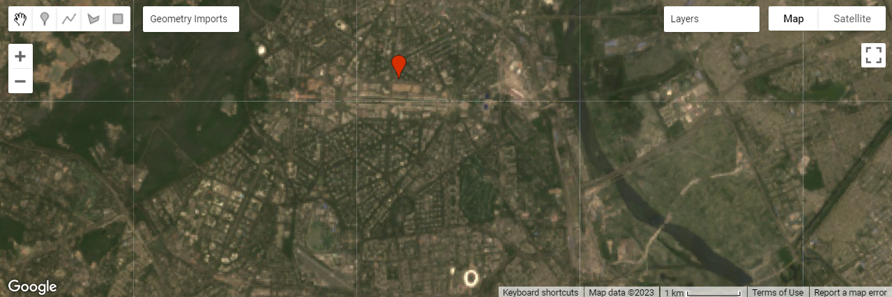
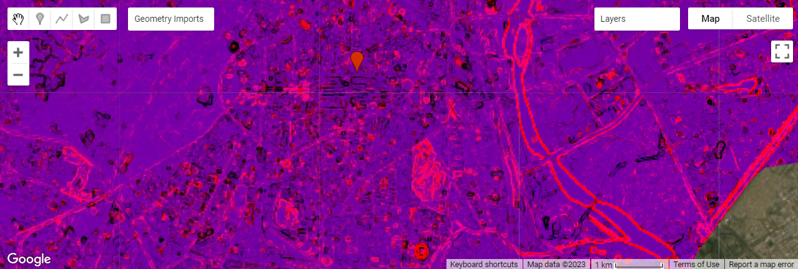

5 Week 5: Google Earth Engine (GEE)
5.1 Learning Objectives
Understand how GEE works
Familiarise self with using GEE and its functionalities.
5.2 Summary of Key Content
5.2.1 Overview of content:
This week, we learnt more about Google Earth Engine (GEE), how it works with its Client and Server sides, and practicalities when using GEE such as scale/ resolution and projections.
5.2.2 Background of Google Earth Engine
GEE is a geospatial processing service that allows geospatial analysis at scale (volume-wise). It takes code that users write and applies it to data on their servers. GEE has unique names for the types of data we use, “image” for what we know as raster data and “feature” for what we know as vectors. There is also ImageCollection and FeatureCollections, which are equivalents of raster stacks and (possibly?) geodatabases. GEE also uses Javascript, which will be interesting as I have no prior exposure to Javascript.
5.2.3 Concept of Client vs Server side
We can upload our own data on GEE, and that is on client side. But the other GEE data is on server side. We refer to these Earth Engine Objects using “ee” in front of it, and they are not available locally.
This implies that we shouldn’t loop on the server. Instead we create a function, and then apply it to what we want on the server. However, there are functions available on the server side too, and they are referred to with the “ee” in front too. Mapping is useful to be more computationally efficient when using GEE
5.2.4 Scale/ resolution
Image scale in GEE refers to pixel resolution. When analysing in GEE, GEE aggregates the image to fit a 256x256 grid. We have to set the scale parameter we need otherwise GEE will resample using nearest neighbour. GEE is aggregating the values based on our analysis extent. We can Input the minimum and maximum for bands to control how the image is visualised as well.
5.2.5 Projections
GEE uses EPSG 3857 as the default projection, and we do not need to worry about it until the end when we are exporting.
5.3 Summary of Practical Content: GEE in Action
This week’s practical covers skills that we have covered before, but in GEE such as optimising the imagery used for analysis, mosaicking and clipping images, as well as texturing, PCA and indices. For this practical, I will be using New Delhi, which is the city Andy used in the practical, as I view this practical as more of a way to familiarise myself with GEE and future GEE practicals will be attempted with other cities.
5.3.1 GEE Data
One thing that stood out to me was the wide variety of datasets available in Google Earth Engine’s Data Catalog. There were datasets available for Climate and Weather data (Surface Temperatures, Climate models, Atmospheric Data, Weather), Imagery (Landsat, Sentinel), MODIS and High-Resolution Imagery) as well as Geophysical data (DEMs, Land Cover maps, Cropland and other datasets such as night-time imagery). This wide variety makes GEE very useful for multiple types of methodologies and analysis, and I would be interested in exploring all the other datasets if time permits.
5.3.2 Scaling factors
Scaling factors from Landsat surface reflectance product is something we have not really encountered before, and it is helpful to know this for future processing of Landsat imagery. However, I have not been able to find a good explanation online on the need to scale the imagery. After using scaling the imagery, I obtained a similar image to Andy’s.
After scaling, mosaicking (including obtaining the mean of overlapping pixels) and clipping was done to obtain a smoother image below that fit New Delhi’s boundaries.

5.3.3 Texturing
Satellite image texture quantifies spectral and spatial variations in pixel values of an image (Farwell et al., 2021), therefore conveying information about spectral and spatial heterogeneity of image features (Haralick, Shanmugam and Dinstein, 1973). The specific statistical method we apply here is the gray-level co-occurrence matrix (GLCM) which is a tabulation of how often different combinations of pixel brightness values (gray levels) occur in an image (Hall-Beyer, 2017). It characterises the texture of an image by calculating how often pairs of pixels with specific values and in a specified spatial relationship occur in an image, thus creating a GLCM, and then statistical measures are extracted from this matrix. Texture measures then give us concepts like “contrast”, “dissimilarity” and “entropy”.
We compute GLCM texture for our area of interest and obtain the following output:

We then zoom in to a specific area to observe what the computed GLCM texture tells us:


We see that the purple spots in the GLCM texture appear to be buildings that are especially reflective in the True Colour image.
5.3.4 PCA
When performing PCA, we are transforming the multi-spectral data we have into a uncorrelated and smaller dataset, while keeping most of the original information. The first component should also capture most of the variance within the dataset. This was the PCA output obtained:



5.4 Applications of key concepts
GLCM and PCA can be used together in remote sensing research. In forestry mapping, such as mapping bamboo forests, textural features such as homogeneity, contrast, entropy and variance of GLCM can be used as classification features(Qi et al., 2022). In this study, textural features were derived from the first component image from a PCA. In a object-oriented LULC classification study (Tassi and Vizzari, 2020), they used GLCM to first calculate textural indices from satellite imagery, and then doing a PCA of the most relevant GLCM metrics to synthesize the textural information. Based on what we observe from current literature, GLCM is usually used to extract textural information from the raster datasets, and PCA done to reduce the number of bands and extract key components, making further steps such as classification easier(Shafizadeh-Moghadam et al., 2021).
5.5 Reflections
This week’s content has familiarised myself with GEE, and hopefully with further use of it, I will become better at understanding the breadth of functions it has in remote sensing analysis. I will also become more aware of limitations of GEE, such as how it might not be the best for doing in-depth geographic analysis with raster data as it has limited analytical functions compared to R for example. We saw how to do classic remote sensing processing steps such as mosaicking and clipping in GEE.
The practical on texturing was useful in helping me understand how raster data works and how it can be used practically for landcover classification. This knowledge seems to be useful for what we’ll be covering in future weeks.